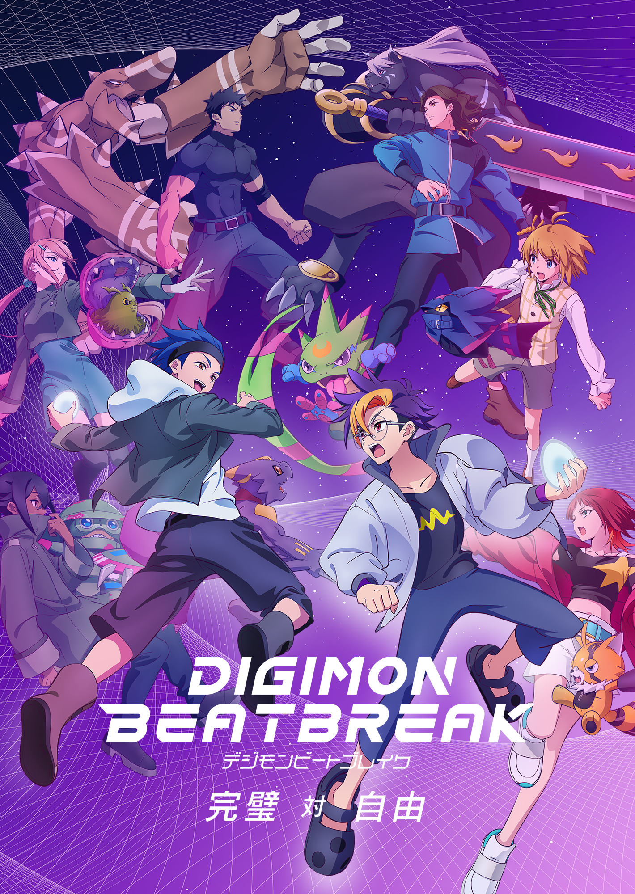

← Voltar para os animesNOVA SÉRIE • 2025
Digimon Beatbreak
Em uma sociedade movida pelo e-Pulse gerado por pensamentos e emoções, Tomoro Tenma conhece Gekkomon e se junta à equipe Glowing Dawn para enfrentar Digimon que ameaçam o futuro.
Continuar assistindoDIGIMON BEATBREAK • 40 EPISÓDIOS
Seu progresso
0 XP22 XP por episódio
0/ 40 assistidos
Enter
Entre na sua conta para salvar seu progresso.